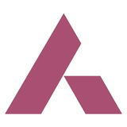
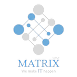
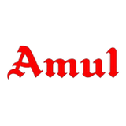
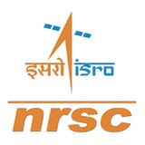
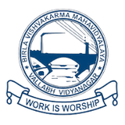

Akshat Gupta
Fourteen months, in numbers
Where I've worked

Managed a 4-branch corporate portfolio of ₹21 Cr across 200+ clients with a team of 5, grew it 15%, and worked with Product, Digital and Compliance on the bank's new onboarding and corporate-banking platforms.

Led website development for TEDx TAPMI '24, wrote the forum's 5G newsletter, and represented the committee at DISHA '24.

Audited 34 outlets; the fixes that followed lifted sales 16% and basket size 12%.

Sole software owner of an autonomous exhibition robot, from requirements to a demo for NRSC leadership.
Problems I've worked on
Real problems from the bank and my own builds: what was wrong, what I did, what changed.
Where that work happened
- Core organising member for TEDx TAPMI '24; led the event website build for a smooth experience and timely updates
- Wrote the August 2024 newsletter on 5G, breaking down telecom advances for students and professionals
- Represented the committee at DISHA '24, engaging guests and keynote speakers to build lasting associations
How I work, and what with
What I do
Tools I use
How I'd approach your problem
Click through the steps.
What I build with
Used hands-on across the projects above, from prototype to deployed pipeline.
What it's built on
MBA, Marketing & IT
T A Pai Management Institute, Manipal · Manipal Academy of Higher EducationAACSB & AMBA accredited
B.Tech, Electronics and Communication Engineering
BVM Engineering College, Vallabh Vidyanagar · Gujarat Technological UniversityClass XII
Class X
Let's talk
Available to join immediately, anywhere in India.